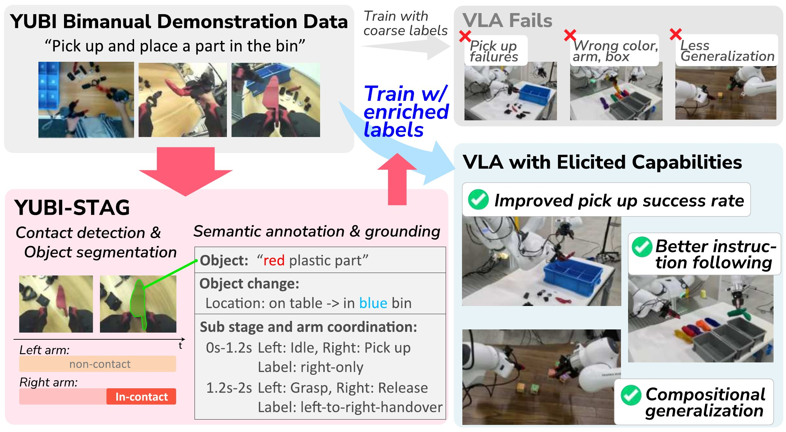
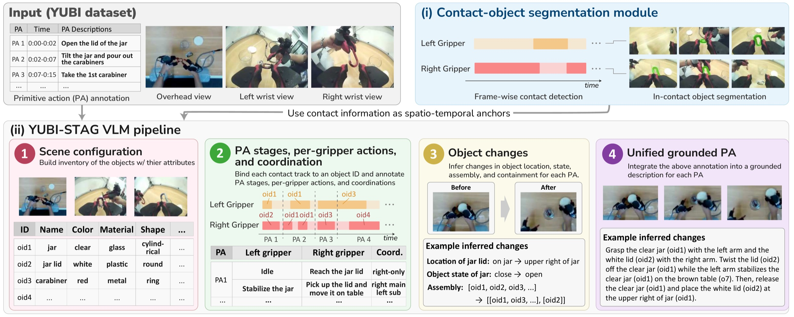
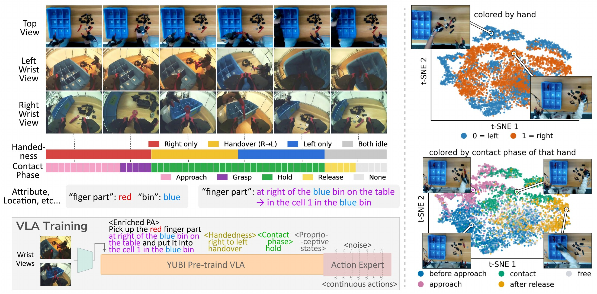
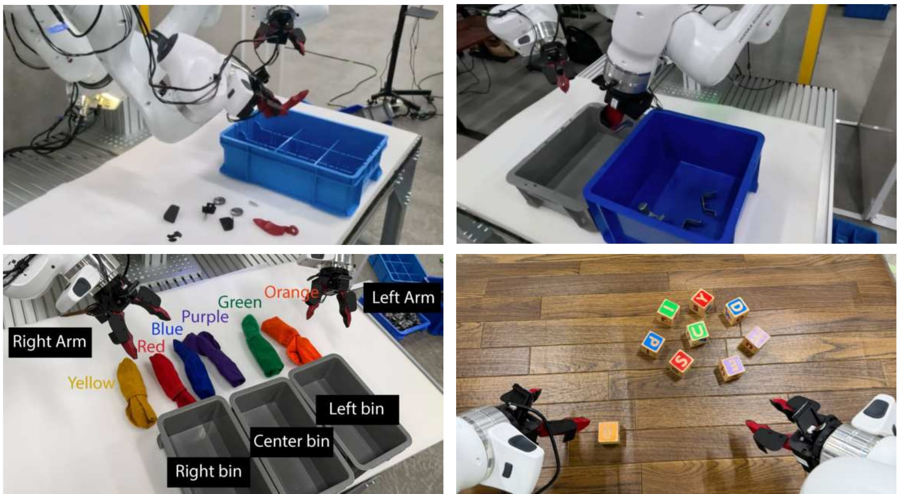
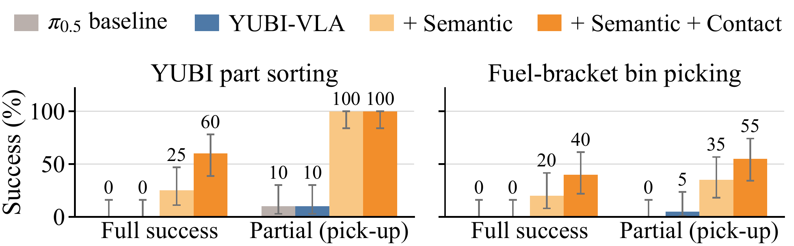
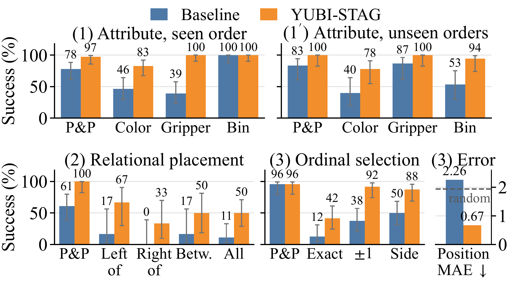
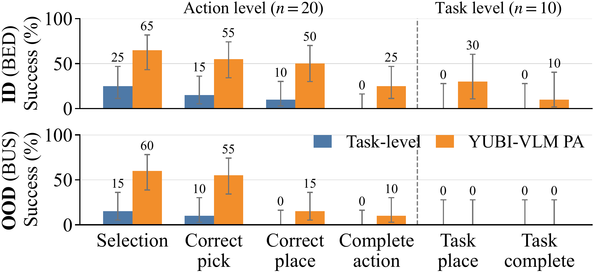

Contact and Semantic-Rich Alignment for VLAs
via Automated Video-Language Grounding
Under double-anonymous review

Abstract
Vision-Language-Action (VLA) models acquire broad manipulation capabilities via large-scale pretraining, yet eliciting them through language requires fine-grained alignment between instructions and physical interactions. Existing robot demonstrations, however, typically provide only coarse task descriptions, omitting how actions are executed, including which gripper acts, which object is contacted, and how it is grasped and moved.
We introduce YUBI-STAG, a framework that automatically enriches manipulation demonstrations with interaction-rich annotations for aligning pretrained VLAs with fine-grained manipulation language. Combining contact-object segmentation with vision-language models, YUBI-STAG annotates object identities, attributes and states, per-gripper actions, bimanual coordination, and spatially grounded interactions. To scale beyond this multi-stage pipeline, we distill it into YUBI-VLM, which directly annotates raw, unsegmented videos in few inference calls and operates from wrist views alone, enabling portable annotation without fixed external cameras. Alongside it, we introduce YUBI-STAG-Bench to comprehensively evaluate STAG annotation quality across temporal, semantic, and spatial grounding tasks, showing that YUBI-VLM generalizes these capabilities to unseen manipulations.
Finally, we use the resulting annotations to post-train YUBI-pretrained VLA policies, aligning their manipulation capabilities with fine-grained language and contact-aware interaction structure. Experiments on bimanual manipulation show improved manipulation performance and instruction following, including control over object identity, acting gripper, target location, and spatial relations absent from the original demonstration labels. Our results show that richly grounded interaction annotation provides a scalable way to better elicit pretrained VLA capabilities through language.
Contributions
A demonstration shows how the task was executed, but its label records only what the task was. We recover the missing interaction structure, and use it to align the policy.
YUBI-STAG & YUBI-VLM
Turns coarsely labeled bimanual demonstrations into grounded spatio-temporal annotations — plus a distilled model that produces them from raw, wrist-view-only video, with no action boundaries given.
YUBI-STAG-Bench
Temporal segmentation, semantic state understanding, and spatial grounding on unseen bimanual manipulations — capabilities no existing manipulation-video or task-success benchmark measures.
Contact- and semantic-rich post-training
Handedness, contact phases, and contact-aware sampling fed to a π0.5-based policy, extending data-centric alignment from instruction text to physical interaction.
YUBI-STAG pipeline
Contact tracks anchor when and where each interaction happens, so a staged multimodal LLM can resolve the rest.

(i) Contact-object segmentation
UMI and YUBI carry no tactile sensors, so contact is inferred visually. A frozen DINOv2-L encodes both wrist streams into a lightweight temporal transformer; per gripper, an MLP head predicts the contact state and a DPT-style decoder the contacted object’s mask. Training scales on gripper-aperture pseudo-labels — SAM2 masks filtered by point-tracking co-motion and depth agreement — then self-training and a small set of precise human annotations.
(ii) Staged VLM annotation
Queries are split into four stages, each building on the last: (1) scene configuration — an inventory of objects with color, material, shape, size, and role under persistent IDs; (2) PA stages, per-gripper actions, and coordination — binding each contact track to an object ID and labeling one of seven coordination types (left/right-only, primary–supporting, either handover direction, bimanual); (3) object changes — source and destination relative to other objects, plus state, assembly, and containment; (4) unified grounded PA annotation, every object mention linked to its ID.
1 / 3 Clip carabiner onto carabiner
YUBI-VLM: distilling the pipeline
Qwen3.6-27B with LoRA (489M trainable parameters, 1.76%) over ten prediction modes that reproduce YUBI-STAG. Contact masks are drawn as contours on the wrist frames and gripper and timing given as text, so grounding needs no extra mask encoder or visual tokens. Dropping the overhead view from half the samples enables wrist-only inference. Training uses 2,477 sessions from 129 long-horizon tasks (29.4 hours; 18,336 PA clips → 29,500 examples), with all ten benchmark tasks held out.
YUBI-STAG-Bench
100 manually annotated episodes from 10 unseen tasks, covering contact-object grounding and structured semantic annotation.
| Method | Grasp detection | Contact-object segmentation | ||
|---|---|---|---|---|
| mIoU ↑ | frame Acc. ↑ | J (e2e) ↑ | F (e2e) ↑ | |
| Aperture + SAM2 | 0.718 | 0.838 | 0.403 | 0.436 |
| Ours | 0.897 | 0.945 | 0.740 | 0.751 |
| Method | Speed× real time | Object ID |
Attribute | PA GEN TAS | Coordi- nation |
Location | State | ||||
|---|---|---|---|---|---|---|---|---|---|---|---|
| Acc. | Shape | Material | B-F1 | S-IoU | 7-way | Cont. | Rel. | mIoU | T-F1 | ||
| Baseline: untrained backbone | |||||||||||
| Qwen3.6-27B | 3.1× | 91.5 | 58.0 | 89.6 | 14.9 | 41.3 | 44.3 | 43.5 | 22.9 | 37.9 | 11.9 |
| Qwen3.6-27B w/o Top | 3.5× | 92.0 | 58.7 | 88.3 | 16.1 | 45.2 | 46.7 | 16.9 | 14.9 | 38.4 | 12.3 |
| Baseline: VLM fine-tuned on robot manipulation videos | |||||||||||
| RoboFine-VLM-397B | 0.9× | 85.0 | 60.8 | 87.2 | 15.6 | 31.8 | 50.6 | 51.3 | 33.5 | 43.0 | 15.1 |
| RoboFine-VLM-397B w/o Top | 1.2× | 89.2 | 60.2 | 84.4 | 15.0 | 30.7 | 46.3 | 44.3 | 27.0 | 44.2 | 14.0 |
| Ours: distilled annotator — PAs predicted from raw video | |||||||||||
| YUBI-VLM | 3.5× | 95.2 | 66.4 | 83.7 | 77.9 | 78.4 | 51.2 | 96.7 | 63.9 | 52.0 | 43.5 |
| YUBI-VLM w/o Top | 3.9× | 93.9 | 64.6 | 87.7 | 78.2 | 78.5 | 52.7 | 90.0 | 50.0 | 47.9 | 31.0 |
| Ours: multi-stage pipeline — ground-truth PA intervals given | |||||||||||
| YUBI-STAG +PA | 1.5× | 94.2 | 72.1 | 92.1 | – | – | 61.6 | 95.3 | 55.9 | 76.0 | 67.9 |
Learned contact tracks beat the aperture proxy on both temporal detection and spatial grounding across all ten tasks. YUBI-VLM improves temporal, coordination, spatial, and state understanding over the untrained backbone while recovering PAs directly from raw video, and holds most of it from wrist views alone — relative location and state timing are what the top view buys. RoboFine-VLM, not trained for temporal localization, over-segments PAs. At 3.3–3.4k output tokens per episode against YUBI-STAG’s 14.6k, the distilled annotator is both the fastest and the most accurate evaluated.
Contact- and semantic-rich post-training
Observations, actions, architecture, and objective stay fixed — only the supervision changes.

A π0.5-based policy pretrained on the 8,434-hour YUBI corpus is post-trained on the same 10–20 hours under different STAG-derived supervision, so ablations differ only in the alignment signal. Semantic labels name the acting hand and interaction type (left, right, or either handover direction), updated over time with STAG stages. Contact-phase labels mark approach, grasp, hold, or release — grasp spanning ±0.2 s around contact onset, release the last 0.2 s. Contact-prioritized sampling rebalances chunks toward these sparse transitions: a grasp onset covering 5% of demonstrations can fill 30% of sampled chunks.
Robot experiments
Bimanual Franka with the YUBI end-effector, 10 Hz control, eight-step action chunks.

Fine-grained manipulation

Neither coarse-label baseline completes either task — their actions are higher-variance, while fine-grained annotations give sharper, better-calibrated motions. On part sorting, semantic labels reach 25% full success and 100% pick-up; contact supervision lifts full success to 60%. On the harder fuel-bracket bin picking, 20% full success doubles to 40%, and pick-up rises from 35% to 55%.
Fine-grained language steerability

The original PAs for this six-sock, three-bin task say only “randomly pick up socks and put it into the box.” With STAG annotations the policy reaches 82.9% color accuracy against the baseline’s 46.4% and follows the instructed gripper in every completed trial, while the baseline always acts with the right gripper despite balanced data. Under two unseen bin orders it holds up, whereas baseline target-bin accuracy falls from 100% to 53.3%. Relational placement (left of, right of, between a color-named reference): 50.0% versus 11.1%. Ordinal selection (“second from the left”): 41.7% exact versus 12.5%, with 91.7% within one position, while the baseline grabs the leftmost sock and scores worse than random.
Color, gripper, and target bin
Relational placement
Ordinal selection
Action composition from generated PAs

Conditioning each segment on its YUBI-VLM-generated PA improves the action funnel on BED — especially target selection and placement — and reaches task-level placement and completion the task-level baseline never does. The gains carry to the unseen BUS composition, so generated PAs capture reusable action semantics. Neither policy completes both BUS actions in one rollout: end-to-end composition is still limited by placement and orientation.
Conclusion
YUBI-STAG annotates bimanual demonstrations with contact-anchored spatio-temporal structure; YUBI-VLM does it directly on raw, wrist-only video, validated on unseen manipulations by YUBI-STAG-Bench. Post-training YUBI-pretrained VLAs on these annotations improves fine-grained manipulation, language following, and composition beyond the original coarse labels. Annotation errors still cap policy performance, so better annotation quality should lift both grounding and manipulation.